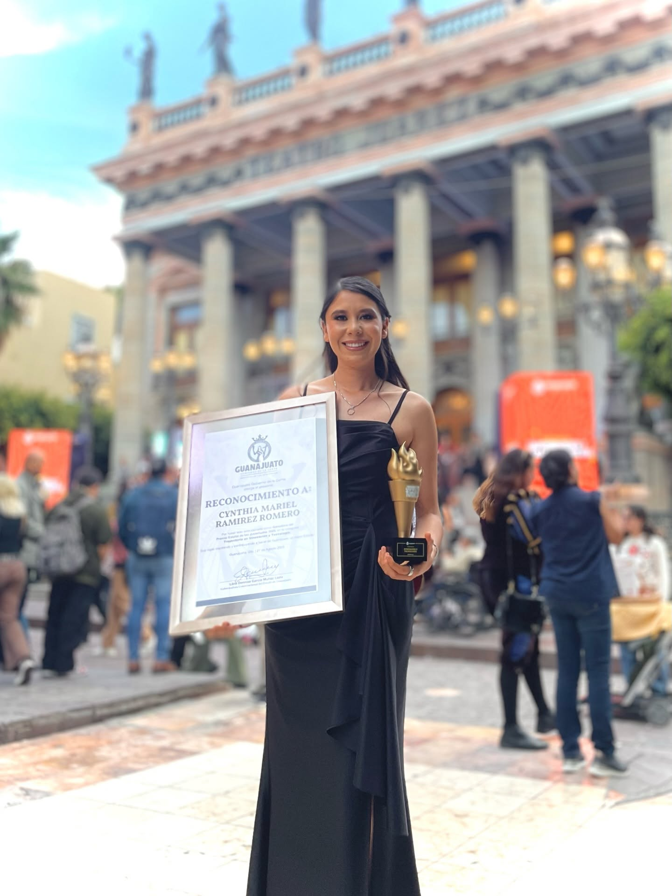
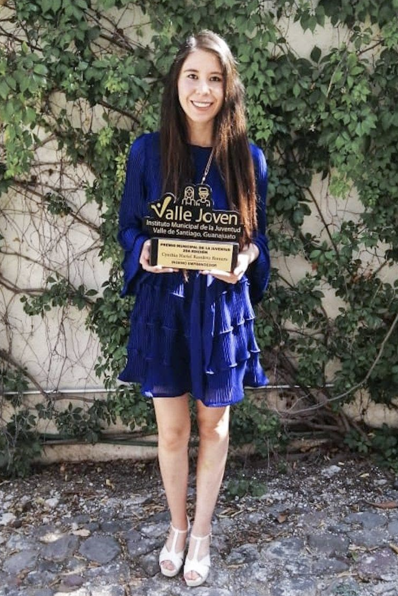

2025
Winner - State Youth Award of Guanajuato for Innovation and Technology
Recognized at the state level for innovation and technology work, including the end-to-end design of a health-tech symptom-tracking application.
Recognitions
A collection of recognitions across innovation, UX, technology, entrepreneurship, and public speaking.

2025
Recognized at the state level for innovation and technology work, including the end-to-end design of a health-tech symptom-tracking application.

2024
I was recognized as one of the three finalists in Guanajuato for my 10-year trajectory in innovation and technology. This is the highest youth award in my state.

2024
As a member of Toastmasters International, I competed in four rounds in California and won first place in District 33 with a speech about what to do when life puts you on the sidelines.

2022
I represented Mexico and Latin America as one of 28 semifinalists worldwide in the Toastmasters International Speech Contest.

2021 - 2022
Recognized as the first UX Ambassador at Wizeline for my performance and involvement in initiatives with the company and Design Team.

2020
Recognized in the entrepreneurship category for my trajectory building and leading different projects across design, innovation, technology, and social impact.

2019
My team developed an AI-powered app to create teams based on skills. Competing against teams from 27 countries, our project was one of the three winners.

2019
I participated in the Trepcamp Summer Experience, where my team developed and pitched an educational video game designed to teach history to children.